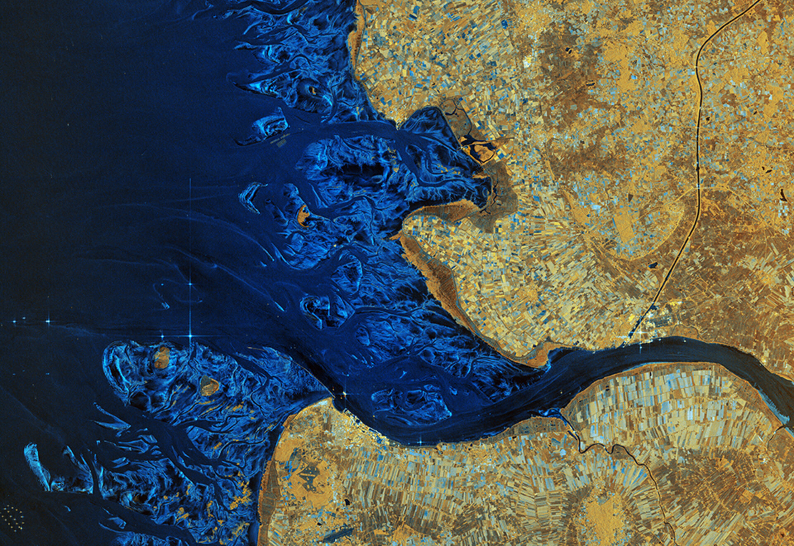
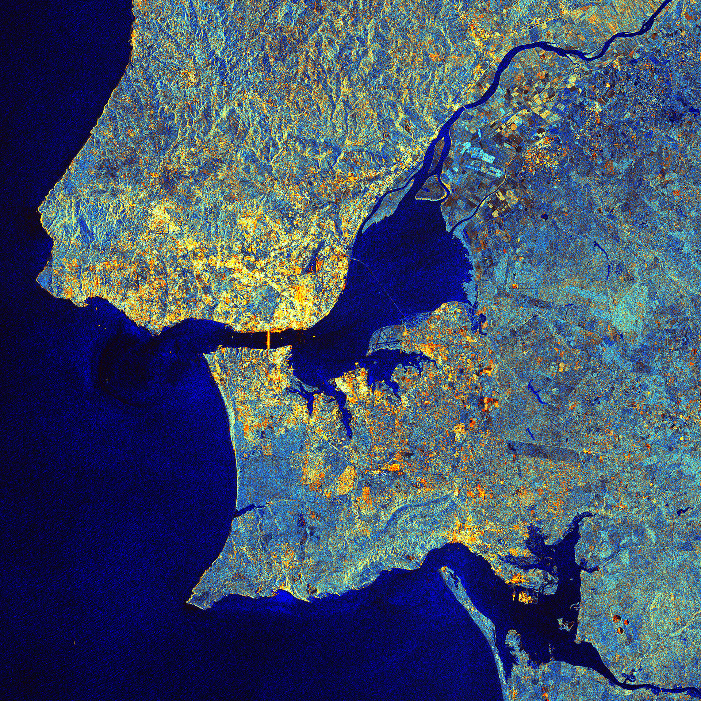
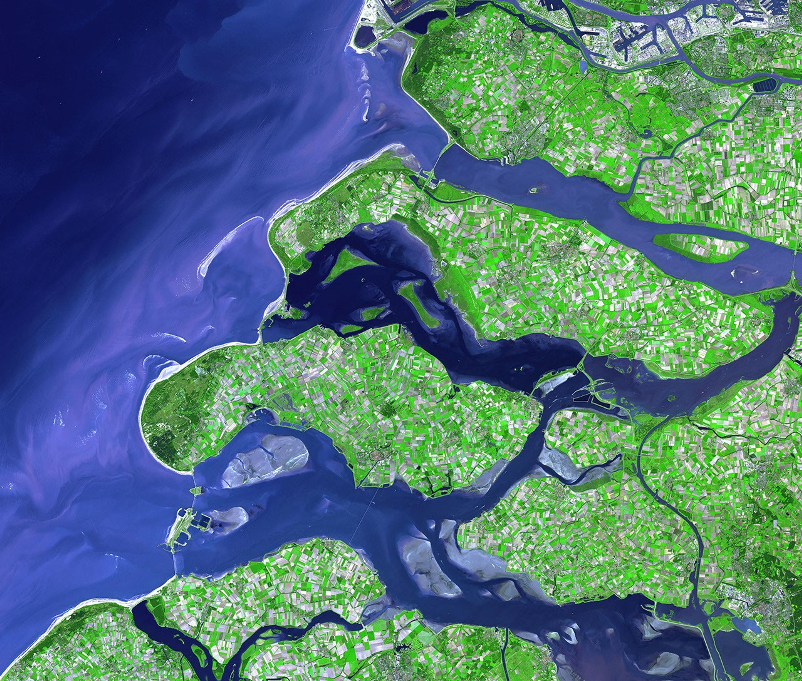
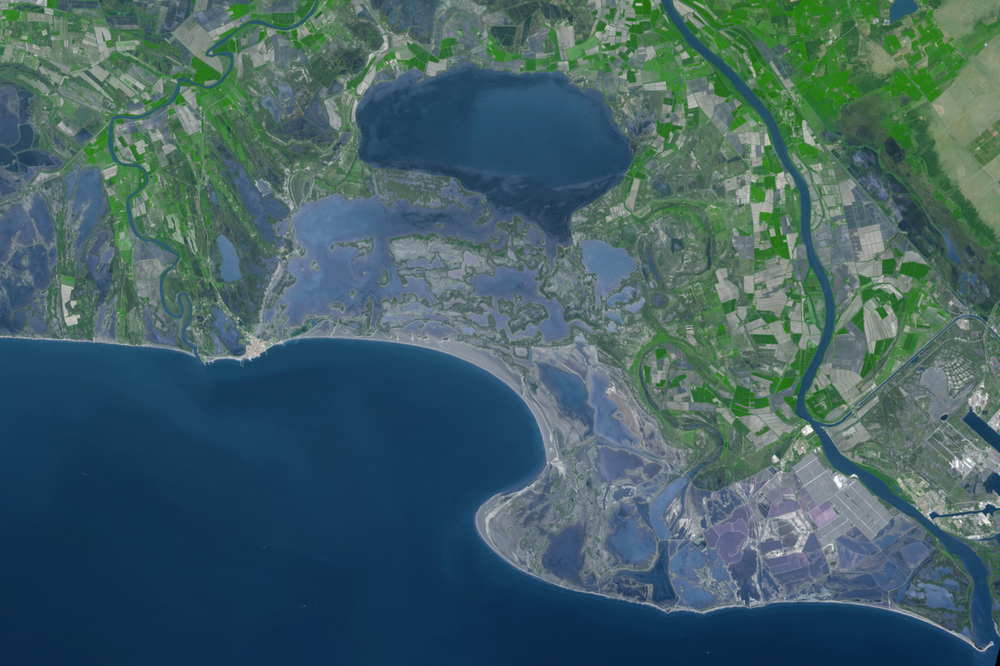

The Tagus Estuary and the Elbe Estuary are two important European estuaries where major rivers meet the sea. The Tagus Estuary is located in western Portugal, where the Tagus River flows into the Atlantic Ocean near Lisbon. Similarly, the Elbe Estuary is found in northern Germany.
Contents
Europe · More information
Elbe

01 / 05
Tagus

02 / 05
Humber

03 / 05
Scheldt

04 / 05
Seine

05 / 05
Elbe
Tagus
Humber
Scheldt
Seine
↑ hover over een folder om meer te ontdekken